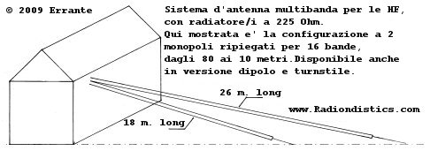
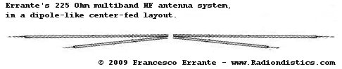

|
Sistema d'antenna MULTIBANDA
per le HF,
con radiatore a 225 Ohm.


Implementazione completa
delle proprietá multibanda del radiatore elementare a 225 Ohm, nella
configurazione a monopolo ripiegato, dipolo ed antenna turnstile.
Tutte le bande radio
amatoriali per tutte le Regioni I.T.U. dagli 80 ai 10 metri e molte altre
ancora, in 16 ampii segmenti, con l'uso di due soli
radiatori!
NB. Allo scopo di evitare malintesi, si fa notare
che il presente progetto NON ha niente a che spartire con il monopolo
ripiegato, elettricamente corto (<< ¼ lambda) noto anche come
"folded unipole", che è un radiatore a bassissima impedenza, con
perdite intrinseche.
Fai click sulle immagini per ingrandirle
Balun con terra virtuale per il sistema d'antenna HF
multibanda con monopoli ripiegati, da 225 Ohm, in configurazione dipolo.
Si notino i due isolatori pivottanti, realizzati in Nylon resitente ai raggi
ultravioletti - nella fattispecie lunghi 42 cm l'uno - per l'ancoraggio di due
monopoli ripiegati per lato. Una soluzione ideale per l'installazione dei rami
a qualsiasi angolo dai 120 circa ai 180 gradi e nuovamente in sù a 120 gradi.
Da "V" invertita a -> dipolo aperto e sù anche -> a "V".
Gli isolatori sono liberi di ruotare attorno all'asse costituito dai perni M8,
che sono anche i terminali del balun stesso ed i capicorda sono serrati
indipendentemente dagli isolatori.
Sistema d'antenna MULTIBANDA per le HF con
radiatore a 225 Ohm: cos'è e come funziona.
by Francesco Errante
Il sistema di antenna multibanda qui
presentato si basa sulla risonanza armonica, un fenomeno fisico ben
noto. Questo sistema, pertanto, NON utilizza trappole, nè cariche, nè altri
artificii per la segmentazione delle bande.
I radiatori, banda per banda, si comportano da mono-banda full-size,
risonando su una differente frazione o multiplo della lunghezza d'onda del
segnale desiderato, ad iniziare dai 3/4 della lunghezza d'onda della banda piú
bassa di ogni serie di risonanze.
Per virtú di ció, è possibile ottenere numerosi e ben distinti gruppi di bande
di frequenza, ognuno con 8 utili bande nello spettro delle HF, ognuna delle
quali esibisce un VALORE COMUNE DI IMPEDENZA, pari a 225 Ohm. Questo
particolare valore d'impedenza comune è la chiave del progetto di questo
sistema, mentre la tecnologia per l'adattamento e messa in fase delle
reti RF a larga banda propria di Radiondistics ha permesso a questo
sistema di lavorare in modo fluido, con un eccezionale adattamento d'impedenza
su tutte le sue bande. NESSUN "accordatore d'antenna" è
necessario e tutte le gamme operative offrono una ampia larghezza di banda,
propria dei sistemi ad alta impedenza.
Inoltre, questo sistema, per il suo ingombro, specie nella versione a monopoli,
non necessita di spazii eccessivi per la sua posa, e' facile da installare e
NON richiede tediosi aggiustamenti della lunghezza dei suoi radiatori per il
suo accordo. Le sue bande di lavoro, infatti, risultano ben definite ma NON
sono critiche. Se necessario, i suoi radiatori si prestano ad essere
ulteriormente piegati rispetto al proprio asse (anche se ció determina una
variazione del diagramma di radiazione del sistema il suo accordo rimane
immutato). I radiatori possono essere installati in tutti i modi ( sloper,
v-invertita, L etc.) e con qualsiasi angolo rispetto al suolo. Il sistema
mantiene i suoi accordi anche in prossimitá della terra o altri ostacoli.
Grazie alla tecnologia di alimentazione a RF, propria di
Radiondistics, nessun de-tuning avviene sui radiatori, ammenocchè essi
non vengano ammainati al suolo.
Per esempio, un arrangiamento da 2 monopoli ripiegati a 16 bande (come mostrato sopra),
per tutte le bande radio amatoriali dagli 80 ai 10 metri e molte altre ancora per
tutte le Regioni I.T.U., occupa circa 26 metri di spazio,
se disposto su una linea retta, mentre una configurazione a dipolo alimentata a
centro necessita semplicemente uno spazio doppio.
Visti i vantagi di questo sistema
multibanda, è stata sviluppata ed e' ora disponibile una completa linea di
sistemi di alimentazione per:
monopoli ripiegati con sistema di terra capacitivo ;
configurazioni a dipolo. Vedi 50/225+225 Ohm virtual
ground balun ;
monopoli ripiegati sistema di terra virtuale ;
monopoli ripiegati in configurazione
turnstile.
 |
|
RADIONDISTICS garantisce a vita i propri
prodotti.
|
Prices:
Errante's 50/225 Ohm capacitive earth grounded UN-UN,
Euro 250,00 +V.A.T. and shipping costs ;
Errante's 50/225+225 Ohm BalUn, as pictured above
Euro 500,00 +V.A.T. and shipping costs ;
Errante's 50/225 Ohm virtual ground feeding system,
Euro 700,00 +V.A.T. and shipping costs ;
Errante's 4x 225 Ohm broadband turnstile driver,
Euro 1650,00 +V.A.T. and shipping costs.
For an useful currency converter click here
RADIONDISTICS garantisce a vita i propri
prodotti.
|
|


{kind=link}
{kind=link}